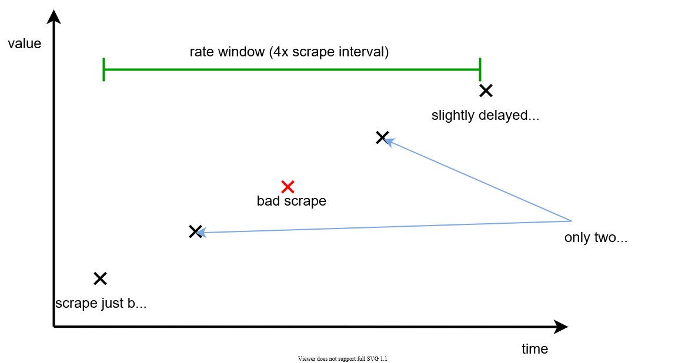

This document should provide requirements and recommendations on how to write alerts for Prometheus (and for AMS in the future) and provide answers on questions:
- How to write alerts?
- How to correctly write expressions for alerts?
- Which labels and annotations must be used?
- And which labels and annotations are recommended to use?
- How Alertmanager works in Kubernetes? Or in two or more Kubernetes in DR mode?
What is Alert Rule?¶
Alert rule is the expression on PromQL query language with any threshold. When the result of the expression will be true Prometheus will generate an event that it can send to Alertmanager. And Aletmanager using a predefined setting can decide what needs to do, send a notification about an alert by notification channel, or suppress this alert.
Example of alert rule:
rules:
- alert: TargetDown
annotations:
description: '{{ $value }}% of {{ $labels.job }} targets are down.'
summary: Targets are down
expr: 100 * (count(up == 0) BY (job) / count(up) BY (job)) > 10
for: 10m
labels:
severity: warning
Requirements¶
This section describes which requirements we (as a monitoring team) present to everyone who should write alerts.
Severity¶
Although severity is just a label, this is a very important label that should represent the severity of this issue.
The task seems to be simple but in fact, it's not because severity can have a different significance for different users of your application. For example, one application has no caches and must always connect to running PostgreSQL, while another application also requested PostgreSQL, but has caches and other storage and can work for a long time without PostgreSQL.
Let's describe some assumptions before will make any conclusions and will provide some recommendations:
- We are not fully sure what is the real impact of this or that problem on different applications
- We don't know which applications and in which environments will use our services
Therefore, the above leads us to the following conclusions:
- Alerts should not have a Blocker/Disaster severity, because an application that uses our service may be able to work without it for a long time
- Alerts should be raised only for real problems
So we have the following recommendation for severity.
| Severity | Label | Description |
|---|---|---|
| Critical | severity: critical |
It indicates a critical situation that requires actions to analyze and solve the problem. This level must be used if the service has failed, but the application is working normally. Other functionalities that are not related to the affected service are also working normally. The High severity level must be used only when the users are affected by not being able to work due to the problem. |
| High | severity: high |
It indicates an unusual situation that must be resolved immediately. The problem may lead to a critical situation in the future. The Average severity level must be used when the application cannot fix the problem itself. If the issue is not attended to, then it may cause a major problem. |
| Warning | severity: warning |
It indicates potentially harmful situations, a potential problem, or a non-critical issue that requires attention. The Warning level must be used for issues that can wait for a day or two to be fixed or when the application still has the chance to heal itself. |
Warning! Please pay attention that severity levels (as and all labels) must be in lowercase!
In very rare cases, you may use one additional severity information. We are not recommended to use it for regular
alerts. For example, you can use this severity in the cases described below:
- You need to suppress some part or all alerts, and as a result, you should have at least one active alert for suppression to work
- You need to have a DeadManSwitch alert. It is an alert that always should be active and always should send notifications. If it stops sending notifications to an external system it means that the original system is dead.
| Severity | Label | Description |
|---|---|---|
| Information | severity: information |
It indicates a normal situation without any problems. This severity means that these alerts don't require any reactions on them. Usually, alerts with such severity are used as ancillary alerts, to use in suppression or in DeadManSwitch scenarios. |
Expression¶
This section describes the best practice and how not to write expressions.
Keep valuable labels during use aggregation¶
A common problem when writing alerting expressions that aggregation making without grouping or with grouping by one or two labels which interesting to the person who writing this alert.
For example, if you wanted to determine if your service's overall error rate (across all label dimensions) was too high, you might write a rule like this:
And by default, the sum() aggregator produces a single output series without any labels.
This removes not only dimensions that you actually want to aggregate away (like the instance, type of error, etc.),
but also all labels that are common across all input series and that may later prove useful for the routing or
silencing of alerts in the Alertmanager.
Especially the namespace, pod, and container labels is a common routing label since these labels are essentially
the coordinates of the service in Kubernetes. And without such labels very difficult to determine with which pod
occurred the problem. Thus I'd recommend preserving this label in aggregations whenever possible:
An even better option is to preserve any labels that you don't want to explicitly get rid of, by replacing
the by() aggregation modifier with an exclude-list approach using the without() aggregation modifier:
This way, any labels on the input series that you don't explicitly aggregate away will still be available in Alertmanager for alert aggregation and routing, as well as for your understanding of the origin of an alert.
Do not use expressions without filters¶
Another common problem when writing PromQL queries, you need to be careful about selecting data only from your
service (or event for your service in the current namespace) with using the expression in the alert.
Especially you need to be a very careful when you want to use one of the common metrics which collect for all
services in Kubernetes. For example, for kubelet (with container_ prefix or kubelet_) or kube-state-metrics
(with kube_ prefix). And this problem may lead to high resource consumption by Prometheus.
Another danger may be that multiple unrelated services may expose the same metric name, potentially even with totally different semantic meanings. In this case, your alert can work incorrectly because it will calculate with using unexpected data and series.
To avoid both situations, be sure that your expressions in alerts use filters (or scope selectors). The expressions without filters/selectors, we can call "naked".
For example, an unsafe "naked" selector might select data from some application deployments (in the worst case even select data from another application with different values):
A safer scoped selector will limit the selected metrics to the ones coming from the my-job job:
This way you can also avoid situations where your alerting rules or dashboards start misbehaving at a later point once another service is scraped that produces a metric name collision.
Don not use too short rate() windows¶
When you want to use for calculating aggregation such functions as rate(), irate(), difference() and others that
tell you how fast a time series is going up or down over a given time window, request as input the time window and
need at least two samples under the input time window to calculate how series changed in the time window.
If you make the time window too small, you risk just having one or zero samples under the window, in which case
the output will become empty.
For example, if you take the 50s-ranged rate() of a counter metric that is scraped every 30s, there's a good chance that those 50s will often not cover two samples, so you get a gappy rate.
Taken to the extreme: if you decrease the rate window to 30s, you only get an output point very occasionally, when two 30s-apart points happen to fall under an arbitrarily aligned 30s window.
So you'll want to choose your input windows large enough – not just 2x the scrape interval, but you'll also want to be robust in the face of occasional scrape failures and unlucky window alignments.
It's generally a good practice to choose rate window sizes to be at least 2x and better 4x the scrape interval:

If you will use the rate windows only 2x the scrape interval you can get the situation when you should have two points but one scrape failed and one point is absent now.
Also, we can advise the round the rate window time to more commonly used units of time. For example,
if you have the scrape interval 1m/60s, by our recommendation you need to use the rate window interval 4m, but
it's better to round the interval to 5m.
The "for" field¶
The for field in alerting rules allows you to specify for how long an output time series needs to be present across
successive rule evaluation cycles for it to turn from a pending alert to a firing alert. This essentially allows
you to add a per-series time tolerance to an alerting rule. Now you may wonder which alerts should have a for duration,
and how long it should be. Is it maybe even a good idea to omit the for duration completely on most alerts?
Consider an alerting rule that uses the up metric to find targets that can't be scraped successfully, with the optional for modifier omitted:
A single failed scrape (which can happen quite easily) will cause this rule to fire. Usually you will want to make your alerting rules less trigger-happy and wait at least a couple of minutes to see if a problem persists before notifying a human:
alert: InstanceDown
expr: up == 0
for: 5m # An instance needs to be down / unreachable for 5 minutes before creating an alert for it.
Specifying no for duration can even be problematic for alerting expressions that already have some time-averaging baked in. Consider this alert on high error rates:
This rule will fire on the first evaluation in which there is a high error rate, as averaged over a 5-minute period of available data. While the 5-minute averaging already introduces some robustness, consider what happens when the Prometheus server is completely fresh or has not collected data for a while:
- The 5-minute
rate()window will only consider a few very recent samples, not actually averaging over five minutes worth of data. - The rule can now produce immediately firing alerts for series that don't even have five minutes worth of data yet.
Introducing a for duration fixes this problem:
Similar arguments could be made about most alerting rules. So to make your alerting rules more robust, you will almost
always want to set the for duration to at least a couple of minutes. Just keep in mind that this also leads
to slower reaction times for alerts, so finding a balance for the for time tolerance is important.
Label¶
The labels allows specifying a set of additional labels to be attached to the alert. And labels very often use
as additional specifications of an alert, because the alert name or description may no contain additional information
and can be duplicated. The label values can be templated.
Prometheus and Alertmanager automatically add labels to raised alerts. And there are some levels on which these will add labels:
- The expression in Prometheus Rule. As we already wrote in Keep valuable labels during use aggregation section very important tries to keep labels during execute aggregations. All labels from the resulting series will add to the alert that will be raised.
- The
external_labelsfrom Prometheus configurations will always add to each series. - The
labelsfrom Rule configuration. Any existing conflicting labels will be overwritten by these labels.
So we'll want to request you try to keep or add the following labels:
namespacepodcontainernode(if exists)
Warning! All label keys and values must be in lowercase!
The namespace label you can set in Rule configuration, for example using the Helm templates.
It's possible because a list of Rules is usually set for services or applications deployed in a specific namespace.
For example, you can set the namespace using the built-in Helm template:
rules:
- alert: TargetDown
annotations:
description: '{{ $value }}% of {{ $labels.job }} Prometheus targets are down.'
summary: 'Prometheus targets are down (instance {{ $labels.instance }})'
expr: 100 * (count(up == 0) BY (job) / count(up) BY (job)) > 10
for: 10m
labels:
severity: warning
namespace: {{ .Release.Namespace }}
Of course, if it is possible, you can keep the namespace label in the expression and it will automatically be set as the alert label.
Other labels (pod, container, node) which we requested to keep can't be set using Helm and should be
add from Rule expression.
Annotations¶
The annotations clause specifies a set of informational labels that can be used to store longer
additional information such as alert descriptions or runbook links. The annotation values can be templated.
By and large, annotations are different from labels in that they can store more information (longer values).
And usually, the annotations are used for adding alert descriptions, dashboards links or runbooks links, and so on.
Unlike the labels, the annotations can be added only from the Rule configuration.
So we'll want to request you add the following annotations:
summary- contains the short description of the alert, can be templateddescription- contains the full description (and maybe longer) of the alert and can be templated
For both annotations, we strongly recommended using templates and adding information to the summary and description
that allows identifying for which application or microservice alert was raised.
About which templates are available and can be used you can read in the documentation:
Also, the general recommendation is don't use common descriptions like:
Such descriptions leave more questions than answers: which service? in which namespace? and so on.
Recommendations¶
This section contains some general recommendations on how you can improve your alerts.
Alert names without spaces¶
Although Prometheus allows specifying alert names as you want we recommended not using spaces in names.
Under alert name we mean that field alert:
rules:
- alert: TargetDown # This is an alert name
annotations:
...
expr: 100 * (count(up == 0) BY (job) / count(up) BY (job)) > 10
for: 10m
labels:
...
This recommendation is important in integration cases when all fired alerts should be sent to an external alert system. In such cases, alert names often are used as keys. And a lot of alerting systems don't allow to use of spaces in alert names.
We recommended to use CamelCase in the alert name. Or at least use the dot (.) or the underscore (_) to replace
spaces.
For example, instead of using the name:
need use the name:
Dead Man's Switch¶
NOTE: The current version of monitoring-operator already has the Dead Man's Switch alert included to out-of-box
alerts, but this alert is disabled by default. You can enable the Dead Man's Switch alert by adding Heartbeat
alert group to the prometheusRules.ruleGroups parameter. Look for more information in the
alert configuration document.
In cases when your service is critical and the customer wants to have a heartbeat or just a regular
the event which signals that the service is up and running you can use the Dead Man's Switch alerts.
The Dead Man's Switch is an always-firing alert. It means that it always should be firing and Alertmanager
will send it each time (through a given repeat interval).
The simplest Dead Man's Switch alert can be configured as:
rules:
- alert: DeadMansSwitch
annotations:
description: This is a DeadMansSwitch meant to ensure that the entire Alerting pipeline is functional.
summary: Alerting DeadMansSwitch
expr: vector(1)
labels:
severity: none
It will signal that Prometheus (which calculates rules) and Alertmanager (which routes alerts) is working fine.
Alerts suppressions¶
You can add logic that will suppress alerts in cases when your application/service can be unavailable or work partially and this is expected behavior.
For example, in cases when you have two Kubernetes with two deployments of your application, but on one Kubernetes all deployments scaled in 0 replicas (Active - Cold Standby schema). In such cases, you may want to have alerts for your application, but disable/suppress them, because you won't have any metrics from your application.
To do it you need to make configurations on some layers:
Create an alert to check metrics absent Configure inhibition rules in Alertmanager
Writing an alert to check metrics absent may seem very simple. First thought or first Google search results will advise using the absent() function, for example:
But most likely it will be a mistake. If you will use a function absent() to check a specific metric
you will not be able to distinguish the case when there are no metrics because the service was scaled to 0 replicas,
from the case when the service has fallen.
You need to use additional conditions or special metrics with the absent() function.
For example:
-
bad condition
-
already better
With using
up{}metric you can make sure that Prometheus will collect metrics if metrics collection was configured right. If Prometheus collected metrics successfully the value will be0, if scrape failed (but service is accessible) the value will be1. Otherwise, this metric with this job label will be absent in Prometheus. -
also possible to use a complex expression, which allows you to understand that deployment exists, but is scaled to 0 replicas and Prometheus currently has no metrics from your service.
Next on the Alertmanager side need to configure suppression rules.
For example, let's imagine that we wrote the rule that will check metrics absent with the following configuration:
groups:
- name: MyService
rules:
- alert: MyServiceMetricsCollectionState
annotations:
description: This alert verify the state of metrics collection for "my-service" and use for other alerts suppression if there is no services to collect metrics.
summary: Verify metrics collection for "my-service"
expr: absent(up{job=~"serviceMonitor/my-namespace/my-service-monitor"})
labels:
severity: none
inhibit_rules:
- source_matcher:
alertname = MyServiceMetricsCollectionState
severity = none
target_matcher:
group = MyService
severity =~ "info|warning|critical"
equal: ['namespace', 'pod']
Dashboard, Handbook, Runbook information or links¶
Often alerts can has a name and description which can say more for people who know something about this service and have experience with troubleshooting.
But not all people have a big experience with any specific services. Even if the person who should watch for alerts and handle fired alerts well know how to investigate and solve issues, it may be useful to have:
Dashboard link- is a link to Grafana Dashboard which can contains related with alert information and can help to investigate fired alertHandbook link- is link on guide where described how this alert can be troubleshoot and which actions can be execute to solve issue and close fired alertRunbook link- is a link on scenario in tool which can automatically execute some steps to solve occurred issue and resolve fired alert
Warning! Although this section contains recommendation to add in alerts Grafana dashboard links and Runbook links, but now in platform we can't provide detailed recommendation how to do it. Dashboards in Grafana now generate new links every time dashboards import in Grafana, so there is no ability to use predefined link. And now in platform there is no service which can store and run any runbook scenarios, so also there is no ability to specify any runbook links.
An alternative to Handbook links can be some annotations which will contains inline descriptions of some handbook information.
For example we can recommended to use the following annotations:
handbook_descriptionhandbook_impact_descriptionhandbook_recommended_actions
Kubernetes DR Specific¶
First of all let's show the Monitoring deployment schema in Kubernetes DR:

As you can see this schema has no metrics replication and just allow Grafana to show data from both sides. It means that Prometheus will collect metrics independently and doesn't know anything about Prometheus in other Kubernetes. Alertmanager also will process alerts independently on all sides and send fired alerts to notification channels.
Because the deployment schema of some applications can be different during regular Kubernetes deployment and during deploy in Kubernetes DR we are recommended:
- Do not use in alerts expressions checked the hardcoded count of replicas. It's a bad idea because the deployment schema in Kubernetes DR may have less replicas (other replicas in fact will run on another side).
- Do ont use in alerts expressions checked the hardcoded components. It's a bad idea because the deployment schema in Kubernetes DR may not contains these components.
- You may use an approach with alts suppression described in section Alerts Suppressions, but it's not a requirement.
Examples¶
Links¶
There are some useful links which you can read to know more about various best practice: